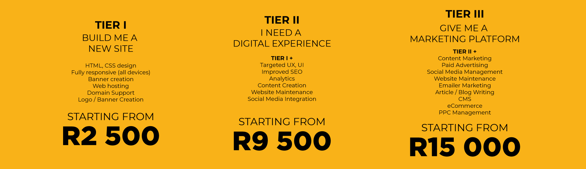

We offer the right balance of brilliant design and clean functionality. Developed for every user and every screen.
DOING IT RIGHT THE FIRST TIME, COSTS LESS

TARGETED UX, UI
INSPIRATIONAL RESEARCH INTERACTIVE PROTOTYPES COLLABORATIVE FEEDBACK
STRATEGY
CONVERSION STRATEGY INFORMATION ARCHITECTURE WIREFRAMES
IMPROVED SEO
HIGH RANKING KEYWORD ANALYSIS ANALYTICS
DEVELOPMENT
SECURE HTML & CSS RESPONSIVE DESIGN IMAGE OPTIMIZATION
We are proud of all our work however, so as not to delay you, so we chose to showcase examples from only a few customers. Should you want to see more, please don't hesitate to ask us.